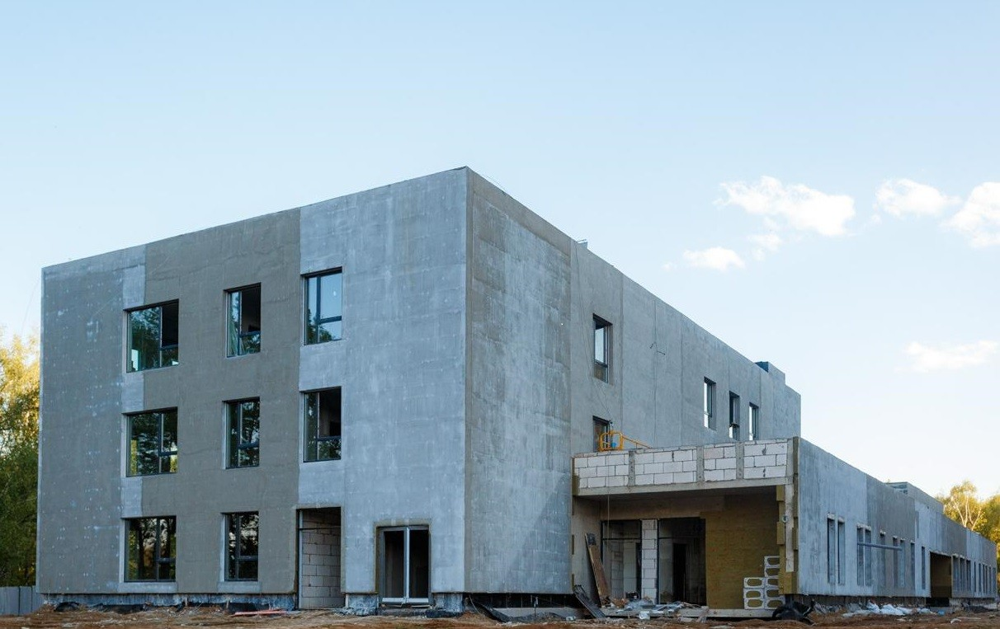
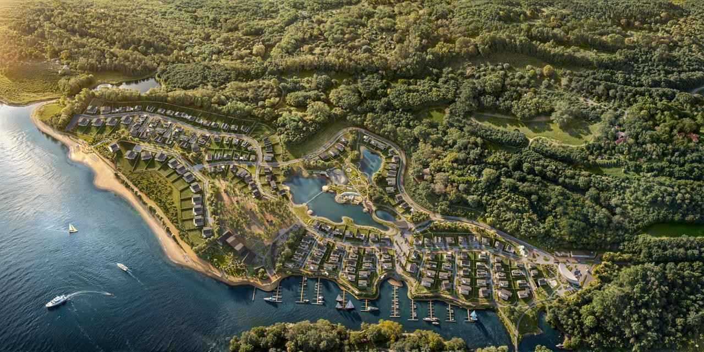
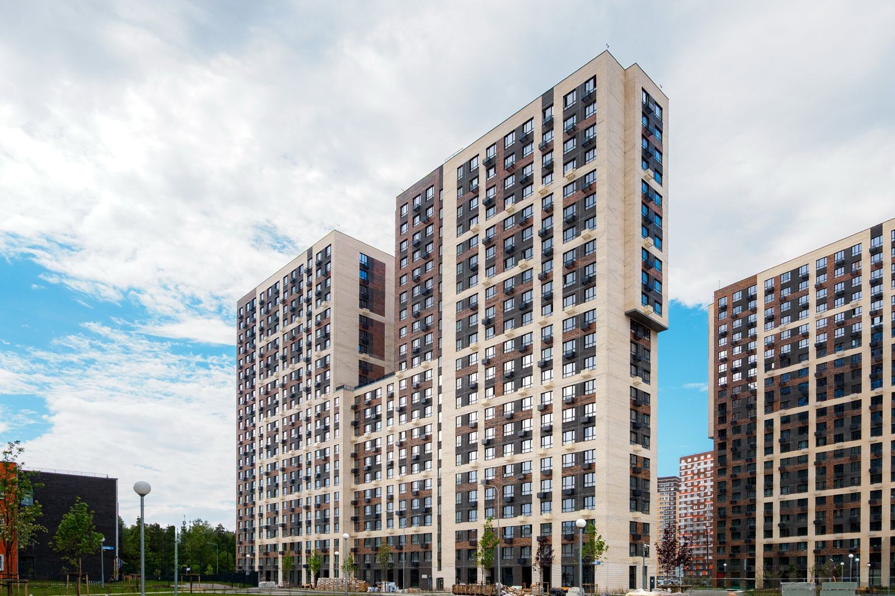
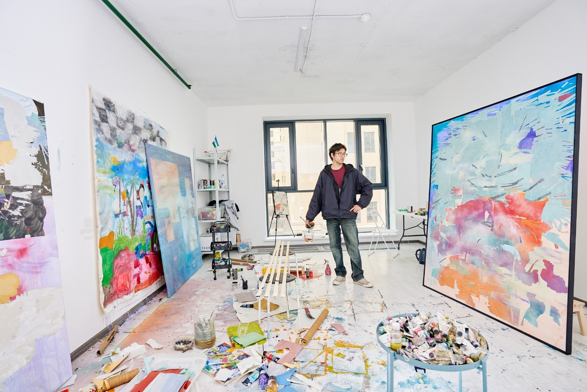
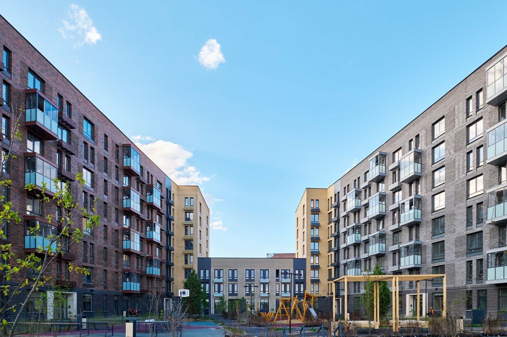
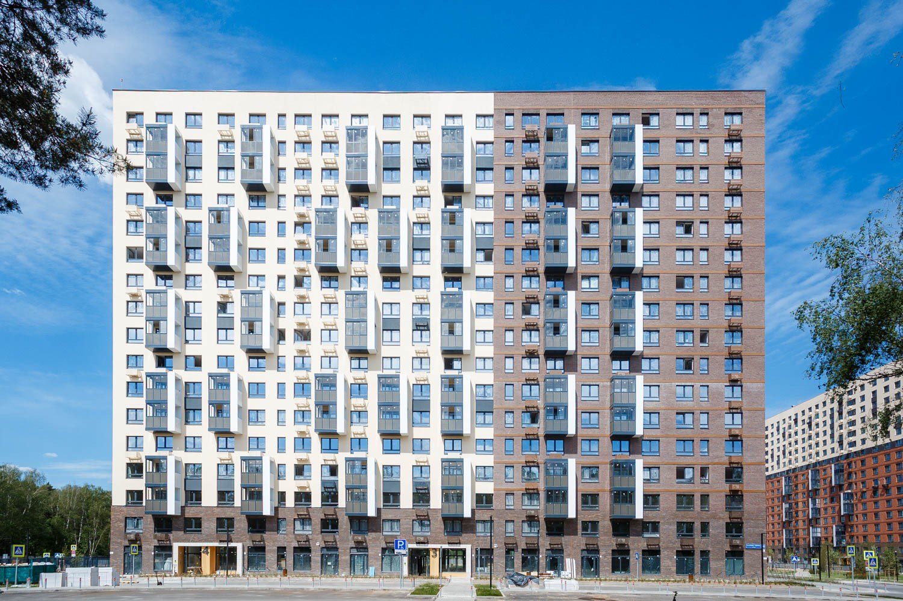
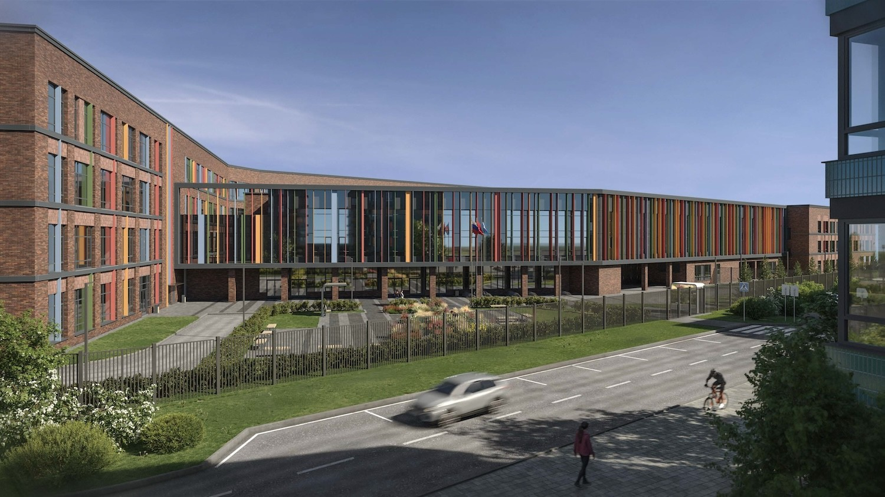
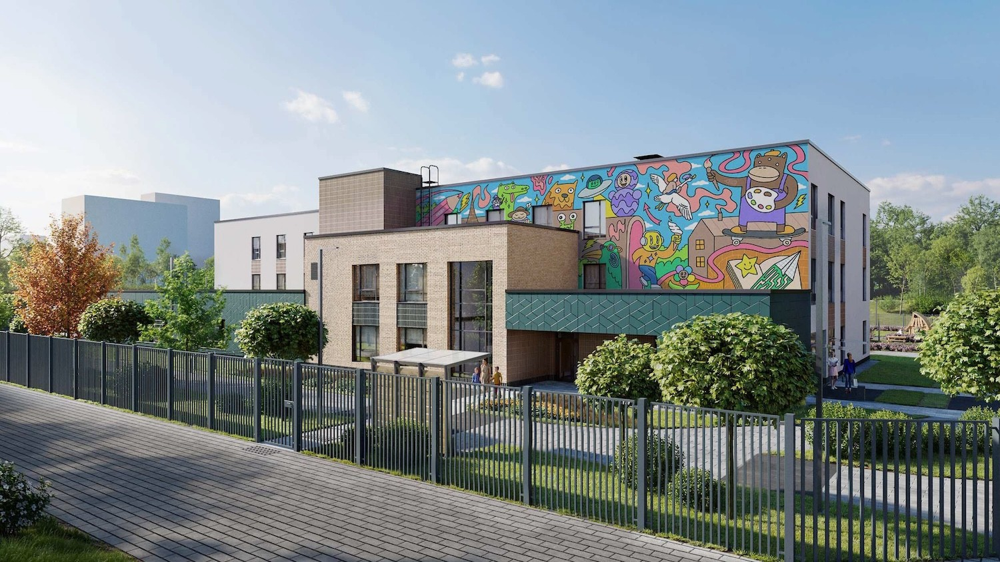
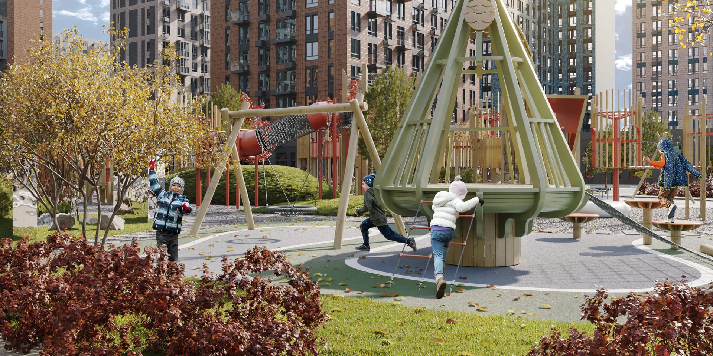

Новости компании

Строящийся детский сад в ЖК «Пригород Лесное» готов почти наполовину
Группа «Самолет» активно развивает социальную инфраструктуру проекта «Пригород Лесное» в Ленинском городском округе Подмосковья...
Строительство детского сада ведется с опережением графика: монолитные работы и кладка выполнены в полном объеме, уже установлены оконные блоки, завершается устройство кровли. Вместе с этим ведется устройство фасада – осуществляется финишная окраска с одновременной облицовкой клинкерной плиткой.
ИТ-решение «Самолета» обеспечит контроль качества на стройплощадках ГК «ТИС»
Группа «Самолет» реализовала проект по внедрению в группе компаний «ТИС» системы контроля качества строительства...
Решение уже используется на большинстве объектов компании. Оно дает возможность контроля за замечаниями на всех этапах строительства, ускоряет их устранение, митигирует риски, связанные с нарушением сроков и перерасходом бюджета.

Марина на 150 яхт появится в Тверской области
В 2027 году в Тверской области откроется первый курорт, где водный отдых стал ядром концепции....
Водный отдых в проекте в Port Emm Zavidovo — не дополнительная услуга, а его центральный элемент. В инфраструктуре поселка и гостиничного комплекса ключевое место занимает полноценный яхт-клуб, причалы для частных судов, набережные и сервис водного туризма. Гостиничный комплекс на 80 номеров с панорамными видами на Волгу группа «Самолет» построит в районе стрелки рек Волги и Инги в Тверской области. Управлять им будет Cosmos Hotel Group. Предполагаемый размер инвестиций составляет 1,5-2,0 млрд рублей. Ввод отеля в эксплуатацию запланирован на 2027 год.

Жилой дом на 548 квартир ввели в эксплуатацию в ЖК «Новоград Павлино»
Группа «Самолет» получила разрешение на ввод в эксплуатацию корпуса №34 проекта...
Группа «Самолет» получила разрешение на ввод в эксплуатацию корпуса №34 проекта «Новоград Павлино» в подмосковной Балашихе. Всего в новом доме от 12 до 22 этажей расположились 548 квартир, подземный уровень заняли 140 кладовых. На первом этаже разместились две сквозные входные группы и восемь коммерческих помещений общей площадью более 900 квадратных метров.

За вдохновением — в старую Москву
Московские художники создадут работы на тему прошлого, настоящего и будущего столицы...
Победители проекта «Московские Мастерские» от Агентства креативных индустрий (АКИ) получили уникальную возможность написать полотна в комфортных условиях с видом на Павелецкий парк и Садовое кольцо. В полностью оборудованных для творческого процесса мастерских художники проведут четыре месяца.

В жилом комплексе «Рублевский Квартал» введены в эксплуатацию два дома на 614 квартир
Группа «Самолет» получила разрешение на ввод в эксплуатацию корпусов №58 и №59...
Среднеэтажные корпуса от 3 до 8 этажей включают 614 квартир общей площадью больше 25 тысяч квадратных метров. Все квартиры будут передаваться собственникам с чистовой отделкой. Планировочные решения в сданных корпусах представлены различными форматами от небольших студий площадью 22 квадратных метра до просторных четырехкомнатных квартир с кухней-гостиной площадью 78 квадратных метров. В линейке лотов преобладают евроформаты, также в домах есть планировки с гардеробными комнатами, гостевыми санузлами и постирочными помещениями.

В «Томилино Парк» введен в эксплуатацию еще один дом на 512 квартир
В «Томилино Парк» введен в эксплуатацию еще один дом на 512 квартир...
В жилом комплексе «Томилино Парк» от группы «Самолет» получил разрешение на ввод в эксплуатацию 17-этажный корпус 5.4 на 512 квартир. Общая площадь жилых помещений в сданном доме – 21 668,7 квадратных метров, дому присвоен высочайший класс энергетической эффективности А+.В новом корпусе представлен широкий выбор квартир и функциональных планировок: от уютных студий площадью 21,4 квадратных метров до просторных четырехкомнатных евроформатов площадью более 80 квадратных метров с объединенной кухней-гостиной. Также есть квартиры с гардеробными комнатами, гостевыми санузлами и специальными постирочными помещениями. Все они передаются владельцам с чистовой отделкой: с ламинатом на полу, натяжными потолками, обоями и гипсокартоном под покраску и установленной сантехникой в ванных и санузлах.

Динамичные витражи
Динамичные витражи в оттенках полевых цветов украсят образовательный комплекс в Новой Москве...
В жилом комплексе «Квартал Западный» в Новой Москве построят образовательный комплекс, украшенный витражными секциями с сеткой из металлических ламелей пастельных тонов. Самая протяженная из этих секций расположится над главной входной группой. Еще несколько витражей высотой во все здание появятся на южном фасаде и со стороны внутреннего двора. Нерегулярный шаг вертикальных ламелей подчеркнет ритм фасадов, а их цветовое решение с отсылкой на полевые цветы станет органичным развитием визуальной концепции всего комплекса. Авторами проекта выступили группа «Самолет» и архитекторы из проектного института S.23

Мурал c мультипликационными героями
Мурал c мультипликационными героями украсит детский сад в Новой Москве...
Мурал с яркими цветами и сказочной атмосферой появится на главном фасаде детского сада в ЖК «Новое Внуково». В основу работы легли разнообразные фантастические персонажи, среди которых есть и полностью уникальные герои, и осовремененные образы из произведений мировой культуры. Проект подготовили архитекторы проектного института S.23 по заказу группы «Самолет», а автором мурала выступил московский художник Napasio — победитель закрытого конкурса от «Самолета» и междисциплинарной творческой платформы «САБСТАНЦИЯ».

Детское пространство по мотивам сказок Льюиса Кэрролла
В Новой Москве появится детское пространство по мотивам сказок Льюиса Кэрролла
В жилом комплексе «Остафьево» от группы «Самолет» появится многофункциональное игровое пространство «Алиса в Стране Чудес» – тематический плейхаб площадью 0,4 га, вдохновлённый культовыми сказками Льюиса Кэрролла. Он станет уже вторым детским игровым пространством такого масштаба в жилом комплексе, и обещает быть ярким центром притяжения для детей и взрослых всего района. Открытие волшебной площадки запланировано на лето 2025 года. Территория плейхаба разделена на восемь смысловых зон, каждая сюжетно связана с главами из сказок про приключения Алисы в стране чудес и в Зазеркалье: от «Мира на шахматной доске», «В гостях у Шляпника» до «Погони за кроликом». Пространство функционально построено по принципу игрового маршрута с элементами, развивающими творчество, логику, моторику и воображение детей.